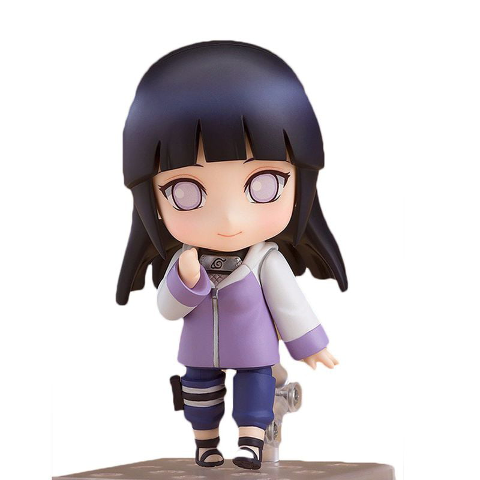

Handcrafted, crochet Naruto doll with three main characters - Naruto Uzumaki (Jacket), Gaara of the Desert, and Sakura Haruno! Made of high quality acrylic fiber that can be washable. Suitable for collectors and as a gift for anime fans. Material: Cotton yarn, fibre filling, safety eyes.
$19.99

Product 2
Hinata has dark blue hair and fair skin - traits that she inherited from her mother. She also has the customary white eyes of her clan. Like the rest of her clan, she possesses the renowned Byakugan which, when activated, stimulates the veins and arteries immediately around her eyes to protrude much more prominetly.